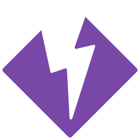
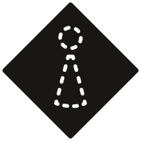
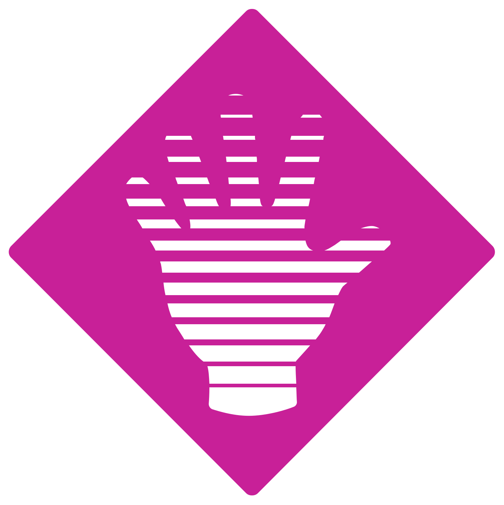
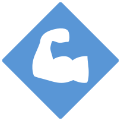
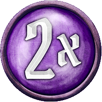

Negative conditions
Suffer 10 damage at the end of your next turn — unless you are healed before it triggers. Any heal applied before the end of that turn removes Bane and prevents the damage entirely.
The next instance of damage you suffer is doubled. Brittle is then removed. Brittle is also removed if you are healed.

Page 29Shuffle a ×0 null card into your attack modifier deck. Curse is consumed when the null card is drawn — it is not a standard end-of-turn condition.
Cannot perform any attack abilities. The figure may still move, use items, and perform non-attack abilities. Disarm is removed at the end of the figure’s next turn.
The figure cannot perform any move abilities. Immobilize is removed at the end of the figure’s next turn.
Cannot use or trigger any items. Bonuses already active from previously used items remain in effect. Removed at the end of your next turn.
Perform all attacks at Disadvantage. Draw two attack modifier cards; use the worse result and ignore the better one. Muddle is removed at the end of the figure’s next turn.
All attacks targeting you gain +1 attack. Poison is removed when you are healed, but the heal restores no HP while Poison is active.
Cannot perform any abilities and cannot use items on your turn. Stun is removed at the end of the figure’s next turn.
Suffer 1 damage at the start of each of your turns. Removed when you are healed by any amount.
Positive conditions
Shuffle a ×2 crit card into your attack modifier deck. Bless is consumed when the ×2 card is drawn — it is not a standard end-of-turn condition.

Page 28Cannot be targeted by any enemy ability. Enemies act as if you are not there when choosing targets. Invisible is removed at the end of the figure’s next turn.

Page 28Heal 1 HP at the start of each of your turns. Regenerate is removed when the figure suffers damage — not at end of turn.

Page 28Perform all attacks at Advantage. Draw two attack modifier cards; apply all rolling effects from both, then use the better non-rolling result and discard the worse. Strengthen is removed at the end of the figure’s next turn.
The next instance of damage you would suffer is halved (rounded down). Ward is then removed.
When conditions expire
Most conditions say "removed at the end of your next turn." The key is when the condition was applied:
Applied during your turn — the condition is active for the rest of your current turn and your entire following turn. It is removed at the end of that following turn.
Applied between turns (by a trap, end-of-round effect, or enemy action during their turn) — the condition lasts through your next full turn and is removed at the end of it.
Attack Modifiers
Advantage: Draw cards until you reveal a non-rolling card, then draw one more. Apply all rolling effects and use the better of the two final non-rolling cards. A monster always uses the better card; a character may choose either.
Disadvantage: Draw cards until you reveal a non-rolling card, then draw one more. Ignore all rolling effects. Use the worse of the two final non-rolling cards.
When you draw a rolling modifier card, add its effect to the attack and draw another card. Keep drawing until you reveal a non-rolling card. All rolling effects stack.

Page 26Deal double damage. The modifier deck is reshuffled at the end of the players turn.
Deal 0 damage. The modifier deck is reshuffled at the end of the players turn. Attack effects (conditions, Push, Pull, etc.) still apply normally.
Attack Effect
Target X allows an attack ability to target up to X figures. Each targeted figure is attacked separately, drawing a modifier card for each one.
Range X means the attack can target any figure within X hexes. Range is counted along the shortest open path, but the path does not need to be unobstructed — only line-of-sight matters for ranged attacks.
Grey indicates where the acting figure occupies. Blue is where an ally must occupy. Red is the target of the AOE. Blank are used as spaces between other hex types.
Shield & Pierce
Shield X reduces incoming attack damage by X for each separate attack. Shield applies after the attack modifier is resolved but before effects like Brittle or Ward.
Pierce X reduces X points of a target's Shield on this attack. Multiple Pierce effects stack.
Retaliate
Retaliate X causes the attacker to suffer X damage after their attack resolves. Retaliate is triggered by being attacked — not by taking damage.
Commanding Figures
A figure can be commanded to perform an X or X ability, even if they have no attack or move stat value (e.g., you can have the Banner of Hope move or wallop an enemy).
However, a figure cannot be commanded to perform an ± X or ± X ability if they have no attack or move stat value.
A commanded figure retains all of their persistent bonuses and special traits and the commanded ability is not considered a separate turn.
Attack effect timing
Attack effects are applied in a specific order relative to the damage roll. Effects that say "on this attack" apply when listed below:
| Effect | When applied |
|---|---|
| +X Attack | During damage calculation |
| Pierce X | During damage calculation |
| Conditions (Wound, etc.) | After damage resolves |
| Push X / Pull X | After damage resolves |
| +X Target | After attack resolves (next target) |
| Elemental infuse | End of your turn |
Forced Movement
Push X forces the target to move up to X hexes, with each hex moving the target farther away from the source. Pull X moves the target up to X hexes closer. The attacker chooses the path.
Forced movement triggers hazardous terrain on each hex entered (but not for flying creatures). All other movement rules apply.
Movement rules
Move X allows you to move up to X hexes. Each hex entered costs 1 movement, except difficult terrain which costs 2.
Jump (as part of a Move ability) ignores all terrain and figures along the path. The final hex still costs 1 movement, still obeys occupancy rules, and still triggers hazardous terrain on landing.
Flying allows a figure to ignore all terrain costs and effects along the path, including difficult terrain, hazardous terrain, and obstacles. The figure may pass through hexes occupied by other figures.
The destination hex must still be empty, and hazardous terrain the figure ends on does not deal damage.
Teleport X places the figure on any empty hex within range X. No path is taken — walls, obstacles, terrain, and figures between origin and destination are all ignored.
Teleport is not movement. It is not prevented by Immobilize and does not trigger abilities that react to movement.
Miscellaneous
Loot X allows a figure to loot up to X adjacent or occupied hex(es). Looting picks up all loot tokens on the targeted hexes. This ability is unaffected by the presence of figures or overlay tiles.
Terrain types
| Terrain | Effect on movement |
|---|---|
| Difficult terrain | Costs 2 movement to enter (not with Jump) |
| Hazardous terrain | Suffer damage on entry |
| Obstacles | Cannot enter or pass through |
| Walls | Block movement and line-of-sight |
Card use
A lost card is removed from play for the rest of the scenario. Lost cards cannot be recovered by resting — only by a specific Recover ability.
A persistent bonus activate when the ability is performed and expire when the specified removal condition has been fulfilled. If no removal condition is specified, the bonus expires at the end of the scenario.
A round bonus activates when the ability is performed and expires at the end of the current round.
A Recover allows a character to recover discarded or lost ability cards (as specified by the ability).

Page 36A spent card The spent icon means the item is spent after use. This is indicated by rotating the card sideways. Spent items can be recovered the next time you perform a long rest.
Some items show a refresh icon indicating when they become available again after use. The refresh trigger varies by item — common triggers include the start of your next turn, the end of the round, or a long rest.
Items with a flip icon are flipped after use, revealing a different use on the other side of the card. When the other side is used, the item is then flipped over back to its front side to be used again.